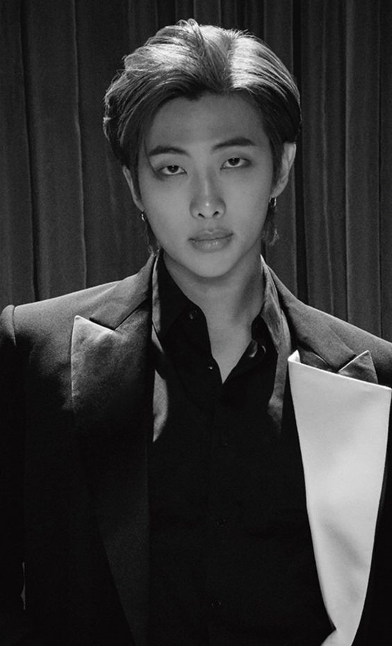

Group K-pop biasanya memiliki satu orang yang menjadi pemimpinnya yang disebut leader. Salah satu leader terbaik adalah RM dari grup BTS.Idol bernama asli Kim Namjoon ini terkenal dengan julukan lyrical genius karena kerap menulis lirik lagu yang menyentuh dan inspiratif.Rap Monster atau kini lebih akrab disapa dengan RM merupakan pentolan boyband ternama asal Korea Selatan, Bangtan Boys alias BTS. Ia juga berperan sebagai rapper utama dalam grup ini.
